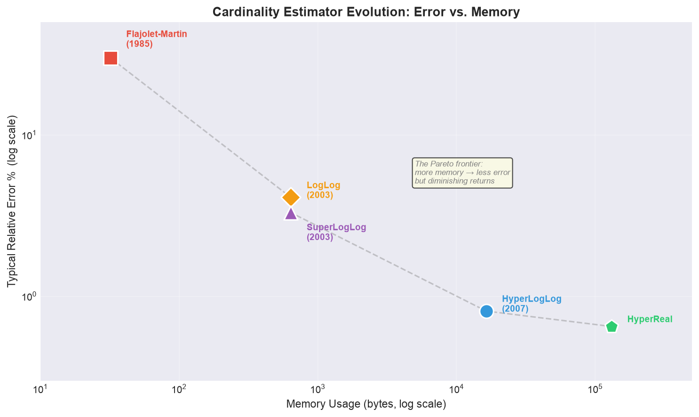

In Hawkins, Indiana, people vanish. Will Byers cycles home one evening and is simply gone — pulled into a parallel dimension where his body doesn't exist anymore on this side of the membrane. No corpse, no trace, no data point. Just absence.
But Joyce Byers figured something out before anyone else: the vanished leave residual signals. Christmas lights flicker. Walls bulge and ripple. A faint electromagnetic echo bleeds through from the other side. You can't see Will, but you can count the flickers and know he's there.
Probabilistic cardinality algorithms do exactly this to your data.
Every element you feed into a sketch disappears. It crosses the membrane of a hash function and never comes back in its original form. The identifier is gone — destroyed, irrecoverable, dragged into the Upside Down of binary entropy. What remains on this side is a faint statistical residue: a maximum rank in a bucket, a minimum float in a register. A flicker in the Christmas lights.
And from those flickers alone — from the pattern of residues across hundreds of buckets — you reconstruct the answer: how many distinct elements vanished into the sketch?
You never stored them. You can't retrieve them. You can't name them. But you know how many there were.
This is the architecture behind:
PFCOUNT (unique page views)APPROX_COUNT_DISTINCTThe family of algorithms that implements it went through four evolutionary leaps between 1985 and the present. Each one refined the same core trick: send data to the Upside Down, read the residue, report the count.
Grab your walkie-talkie. We're going to follow the entire lineage, with working Python from CardinalityKit.
The deterministic answer is simple: don't let anyone vanish. Maintain a set. Insert every element. Count the set. Everyone stays in the real world, accounted for, visible.
seen = set()
for event in stream:
seen.add(event.user_id)
cardinality = len(seen)
Space: $O(n)$. A billion user IDs at 64 bytes each → 64 GB of RAM to answer a single integer question. In a distributed scenario, you'd need to ship those sets between cells for deduplication — a bandwidth catastrophe that also doubles as a privacy breach.
The question Philippe Flajolet asked in 1985: what if you let the data vanish — and could still count it from the echo?
The founding paper: "Probabilistic counting algorithms for data base applications." This is the moment someone built the first gate to the Upside Down and proved you could read the flickers from the other side.
The insight: hash each element uniformly into a binary string. The element itself is gone — destroyed in transit, irretrievable. But the hash it leaves behind has exploitable properties. Specifically, the number of trailing zeros is a noisy thermometer for how many distinct elements have vanished through the gate — because long runs of zeros are exponentially rare.
| Trailing zeros ($k$) | Probability | Expected distinct to trigger |
|---|---|---|
| 0 | $1/2$ | 1 |
| 1 | $1/4$ | 4 |
| 2 | $1/8$ | 8 |
| 3 | $1/16$ | 16 |
| $k$ | $1/2^{k+1}$ | $2^{k+1}$ |
Think of it this way: if Eleven's signature hashes to ...0001 (three trailing zeros), that's not remarkable. But if Subject 001's hash ends in ...00000000001 — ten trailing zeros — something statistically interesting happened. You must have processed enough distinct subjects that a $1/2048$ event was bound to occur.
The algorithm records these occurrences in a 32-bit bitmap. The estimate: $2^R / 0.7735$, where $R$ is the position of the leftmost unset bit.
from cardinalitykit import FlajoletMartinEstimator
import hashlib
fm = FlajoletMartinEstimator()
subjects = [f"subject_{i:03d}" for i in range(500)]
for s in subjects:
hash_val = '{:32b}'.format(int(hashlib.sha256(s.encode()).hexdigest()[:8], 16))
fm.update(hash_val)
print(f"FM estimate: {fm.estimate():.0f}") # Actual: 500
print(f"Memory: {fm.memory_usage()} bytes") # ~300 bytes (Python object overhead on a 32-bit bitmap)
The error is savage — ±30% on a good day. One bitmap, one roll of the dice. But the memory is constant. The data is gone — vanished into the Upside Down of the hash function, never coming back. Yet the count persists, flickering in the bitmap like Joyce's Christmas lights. That single principle — let the data disappear, read the residue — is the Rosetta Stone for everything that follows.
Eighteen years pass. Flajolet, Durand, and Gandouet realize that FM's high variance comes from relying on a single flicker. One wall of lights isn't enough — the signal is too noisy. The fix: build $m$ walls. Split the hash space into $m = 2^b$ independent lanes, each tracking its own deepest echo.
Split the hash space into $m = 2^b$ independent lanes. Route each element to its lane based on the first $b$ bits of its hash. Each lane tracks only its own maximum rank — the longest run of zeros it's ever witnessed.
Step by step, when a hash arrives:
buckets[j] = max(buckets[j], ρ)The estimate averages across all buckets with a correction factor:
$$\hat{n} = \alpha_m \cdot m \cdot 2^{\frac{1}{m}\sum_{j=1}^{m} M[j]}$$where $\alpha_m \approx 0.397$ is the LogLog bias constant.
Why "LogLog"? Each bucket stores a rank that grows as $\log_2(\log_2(n_{\max}))$ bits. To count up to $2^{32}$ distinct elements, you need 5 bits per bucket. With 1024 buckets: 5 × 1024 = 640 bytes. That's it. Six hundred forty bytes to count four billion things.
from cardinalitykit import LogLogEstimator, SuperLogLogEstimator
import hashlib
data = [f"subject_{i}" for i in range(10000)]
ll = LogLogEstimator(k=10)
sll = SuperLogLogEstimator(k=10)
for item in data:
h = '{:32b}'.format(int(hashlib.sha256(item.encode()).hexdigest()[:8], 16))
ll.update(h)
sll.update(h)
print(f"LogLog: {ll.estimate():.0f}") # ~10000
print(f"SuperLogLog: {sll.estimate():.0f}") # ~10000, tighter
Same paper, second insight. Some buckets get lucky — a freak hash deposits an absurdly high rank, pulling the average up. SuperLogLog's fix: sort the bucket values, throw away the top 30%, average only the survivors.
A brute-force outlier trimming that cuts the standard error from $1.30/\sqrt{m}$ to $1.05/\sqrt{m}$. Crude, effective, no additional memory.
Flajolet's final algorithm. The one that ended the search.
The problem with the arithmetic mean — even after trimming — is that it treats all bucket values linearly. A bucket reading 20 contributes as much to the average as a bucket reading 5, despite representing a $2^{15}$-fold difference in implied cardinality. The arithmetic mean doesn't care about the exponential relationship between rank and count.
The harmonic mean does.
$$\hat{n} = \alpha_m \cdot m^2 \cdot \left(\sum_{j=1}^{m} 2^{-M[j]}\right)^{-1}$$The harmonic mean is the reciprocal of the arithmetic mean of reciprocals. It's naturally dominated by small values — which is exactly what you want when outliers always push up. A bucket with an anomalously high rank barely moves the needle. The formula self-corrects.
Standard error: $1.04/\sqrt{m}$. With $m = 16384$ (the Redis default, k=14): ±0.81% error in 16 KB.
HLL also automated three correction zones to handle edge cases:
| Range | Correction | Reason |
|---|---|---|
| $\hat{n} < 2.5m$ | Linear Counting | Too few elements to fill all buckets; count empties instead |
| $2.5m \leq \hat{n} \leq 2^{32}/30$ | None | Formula's sweet spot |
| $\hat{n} > 2^{32}/30$ | $-2^{32}\ln(1-\hat{n}/2^{32})$ | Hash collision compensation near saturation |
from cardinalitykit import HyperLogLogEstimator
import hashlib
hll = HyperLogLogEstimator(k=14)
data = [f"user_{i}" for i in range(1_000_000)]
for item in data:
h = '{:32b}'.format(int(hashlib.sha256(item.encode()).hexdigest()[:8], 16))
hll.update(h)
estimate = hll.estimate()
error = abs(estimate - 1_000_000) / 1_000_000 * 100
print(f"HLL estimate: {estimate:.0f}")
print(f"Error: {error:.2f}%")
print(f"Memory: {hll.memory_usage()} bytes")
This is the algorithm. The one running behind PFADD/PFCOUNT in Redis. Behind Spark's approximate distinct. Behind Google's Sawzall. It's not a research curiosity — it's deployed infrastructure counting billions of things with kilobytes of state, every second, on every continent.
HLL operates on integers. Ranks are discrete: 1, 2, 3, ... The correction zones exist precisely because discrete bit-space has hard boundaries — like a wall between dimensions that occasionally warps but never fully dissolves. Below a few thousand elements, the formula undershoots. Above $2^{32}$, the hash space saturates.
HyperReal dissolves the wall entirely. Instead of mapping hashes to integer bit ranks, it maps them to continuous floats in $(0, 1)$ — a smooth, boundaryless Upside Down where the echoes don't discretize. Each bucket tracks the minimum value it has ever seen (initialized to 1.0).
The probability model: if you throw $n$ uniform samples into $m$ buckets, the minimum value in any bucket follows a scaled exponential distribution:
$$M[j] \sim \frac{m}{n} \cdot \text{Exp}(1)$$The expected value of $M[j]$ is $m/n$. Sum all $m$ buckets: $\sum M[j] \approx m^2/n$. Invert:
$$\hat{n} = \frac{m^2}{\sum_{j=1}^{m} M[j]}$$No correction zones. No bias lookup tables. No ceiling at $2^{32}$. The continuous minimum scales inversely with cardinality by nature of the exponential distribution. The estimator is unbiased straight out of the box.
from cardinalitykit import HyperRealEstimator
import hashlib
hr = HyperRealEstimator(k=14)
data = [f"user_{i}" for i in range(1_000_000)]
for item in data:
h = '{:32b}'.format(int(hashlib.sha256(item.encode()).hexdigest()[:8], 16))
hr.update(h)
print(f"HyperReal estimate: {hr.estimate():.0f}")
print(f"Memory: {hr.memory_usage()} bytes")
The cost: 8 bytes per bucket (a full float64) instead of HLL's 5–6 bits. For the same register count, HyperReal uses roughly 10× more memory. But the simplicity of the estimator — a single division — and the absence of edge-case machinery makes it compelling for research systems and high-precision applications where memory isn't the binding constraint.
Here's where the Upside Down metaphor stops being a metaphor and becomes architecture.
Imagine two monitoring stations — Hawkins Lab and the Wheeler basement — each with its own wall of flickering lights (its sketch). Each station has observed its own stream of vanishing subjects. They want to know the total number of unique subjects across both stations, but they can't transmit the raw observations (the radio is tapped, and Vecna is always listening).
They transmit only the flicker patterns. Fixed-size arrays of numbers that mean nothing to an interceptor.
To compute the union cardinality (total unique vanished across both stations), merge the sketches:
# HyperLogLog: element-wise MAX
merged_hll = [max(a, b) for a, b in zip(hawkins.buckets, chicago.buckets)]
# HyperReal: element-wise MIN
merged_hr = [min(a, b) for a, b in zip(hawkins.buckets, chicago.buckets)]
The merged sketch produces the cardinality of the union — as if all subjects had vanished through a single gate. The math works because MAX preserves the deepest echo (HLL's "max leading zeros" semantics) and MIN preserves the faintest signal (HyperReal's "minimum value" semantics) across the combined stream.
For intersections — "is the same subject operating in both cells?" — you apply inclusion-exclusion:
$$|A \cap B| = |A| + |B| - |A \cup B|$$Each cell knows its own cardinality. The merged sketch gives the union. Subtraction gives the overlap. All without revealing which specific elements overlap.
Joyce knows 3 lights are flickering on both her wall and the one in Murray's basement. She doesn't know which 3 subjects they correspond to. And anyone tapping the radio sees nothing but arrays of floating-point numbers — residues of the vanished, meaningless without the hash function's secret salt.
Raw cardinality answers "how many?" but not "how many of what kind?" In audience measurement, you need demographic breakdowns — age groups, device types, content categories — without ever tying them back to individuals.
CardinalityKit's ExtendedHyperRealSketch solves this by storing, alongside each bucket's minimum value, the attribute of the element that produced it:
from cardinalitykit import ExtendedHyperRealSketch
sketch = ExtendedHyperRealSketch(b_m=10)
events = [
{'id_to_count': 'subject_011', 'attribute': 'telekinesis'},
{'id_to_count': 'subject_008', 'attribute': 'illusion'},
{'id_to_count': 'subject_003', 'attribute': 'precognition'},
{'id_to_count': 'subject_011', 'attribute': 'telekinesis'}, # duplicate — ignored
]
for event in events:
sketch.update_sketch(event)
total = sketch.get_cardinality_estimate()
by_power = sketch.get_frequency_for_attr()
print(f"Total subjects: {total:.0f}")
print(f"By ability type: {by_power}")
The mechanism: when an element wins a bucket (produces the new minimum), its attribute is recorded. The attribute distribution across won buckets approximates the true demographic proportions of the underlying population. You get per-segment cardinality from the same fixed-memory structure.

| Algorithm | Year | Aggregation | Bits/Register | Std. Error | Corrections |
|---|---|---|---|---|---|
| Flajolet-Martin | 1985 | Single bitmap | 1 | ~30% | Bias constant |
| LogLog | 2003 | Arithmetic mean | ~5 | $1.30/\sqrt{m}$ | Bias constant |
| SuperLogLog | 2003 | Trimmed arith. mean | ~5 | $1.05/\sqrt{m}$ | Bias + truncation |
| HyperLogLog | 2007 | Harmonic mean | 5–6 | $1.04/\sqrt{m}$ | Three zones |
| HyperReal | — | Sum of minimums | 64 (float) | Unbiased | None |
One thread connects them: compress an unbounded stream into a fixed-memory fingerprint, then extract cardinality from the statistical properties of that fingerprint. Each generation found a better aggregation function or a better probability model. The data structure shrank while the accuracy grew.
The full CardinalityKit repository provides production-ready Python implementations of every algorithm in this lineage — plus extended sketches for demographic tracking and sample-to-population conversion for panel data extrapolation.
Every element you feed into a sketch goes to the Upside Down. It's not coming back. The identifier is destroyed, the original form is lost, the membrane has sealed behind it. But the Christmas lights still flicker — and if you know how to read the pattern of residues across the buckets, you'll always know how many vanished.
The data is gone. The count remains.